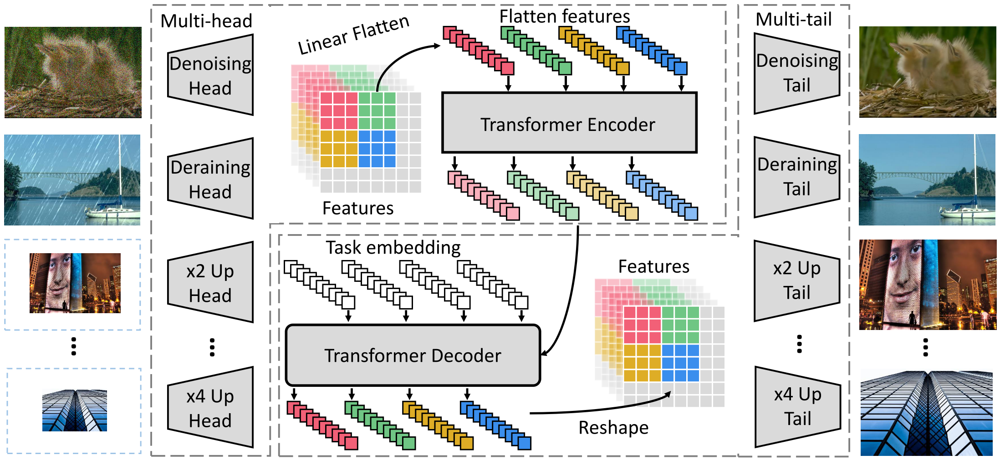

Pre-Trained Image Processing Transformer¶
Pre-training has the potential to provide an attractive solution to image processing tasks by addressing the following two challenges:
Task-specific data can be limited.
It is unknown which type of image processing job will be requested until the test image is presented.
In this paper, the authors study the low-level computer vision task (e.g., denoising, super-resolution, and deraining) and develop a new pre-trained model, namely, Image Processing Transformer (IPT). The proposed IPT is learned in an end-to-end manner on ImageNet.
With only one pre-trained model, IPT outperforms the current SOTA methods on various low-level benchmarks.
IPT Architecture¶
The overall architecture of IPT consists of four components:
heads for extracting features from the input corrupted images
an encoder-decoder transformer for recovering the missing information in input data
tails for formapping the features into restored images
Heads. Denote the input image as \(x \in \mathbb{R}^{3 \times H \times W}\). The head generates a feature map \(f_H \in \mathbb{R}^{C \times H \times W}\). (Typically, \(C = 64\).) The calculation can be formulated as:
Transformer encoder. Features \(f_H \in \mathbb{R}^{C \times H \times W}\) are reshaped into a sequence of patches ("words"), \(f_{p_i} \in \mathbb{R}^{P^2 \times C}\), \(i \in \{1, \dots, N = \frac{HW}{P^2}\}\). To maintain the position information, the authors add learnable position encodings \(E_{p_i} \in \mathbb{R}^{P^2 \times C}\) for each patch for feature \(f_{p_i}\) following [1, 2], and \(E_{p_i} + f_{p_i}\) is directly input into the transformer encoder.
The architecture of encoder layer is following the original structure in [3], which has a multi-head self-attention module and a feed forward network. The output of encoder for each patch is \(f_{E_i} \in \mathbb{R}^{P^2 \times C}\). The calculation can be formulated as:
where \(l\) denotes the number of layers in the module, MSA denotes the multi-head self-attention module, and FFN denotes the feed forward network with two fully-connected layers.
Transformer decoder. The difference to that of the original transformer is that they utilize a task-specific embedding as an additional input of the decoder. These task-specific embedding \(E_t \in \mathbb{R}^{P^2 \times C}, \; i = \{1, \dots, N_t\}\) are learned to decode features for different tasks. The outputs of the decoder are \(f_{D_i} \in \mathbb{R}^{P^2 \times C}\), which is then reshaped to \(f_D\) with size \(C \times H \times W\). The calculation can be formulated as:
Tails. The calculation can be formulated as \(f_T = T^i (f_D) \in \mathbb{R}^{3 \times H' \times W'}\).
{kind=link}
Pre-Training on ImageNet¶
One of the key factors for successfully training an excellent transformer is that the well use of large-scale datasets. Using the same degeneration methods as suggested in [4, 5], the authors generate synthetic datasets for several image processing tasks from the ImageNet.
The loss function for learning the IPT in the supervised fashion can be formulated as:
where \(I_{corrupted}^i\) is the corrupted image for task \(i\).
Due to the variety of degradation models, such as the wide range of possible noise levels, the generalization ability of the IPT should be further enhanced. The authors introduece contrastive learning [6, 7] for learning universal features so that the pre-trained IPT model can be utilized to unseen tasks. Denote the output patched features generated by the IPT decoder for the given input \(x_j\) as \(f_{D_i}^j \in \mathbb{R}^{P^2 \times C}, \; i \in \{1, \dots, N\}\), where \(x_j \in X = \{x_1, \dots, x_B\}\). They aims to minimize the distance between patched features from the same images while maximize the distance between patches from different images. The loss function is formulated as:
where \(d(a, b) = \frac{a^\top b}{\lVert a \rVert\lVert b \rVert}\) denotes the cosine similarity. And the overall loss function is:
Conclusion¶
In the future work, the authors aim to extend the IPT model to more tasks such as deblurring, dehazing, etc.
References¶
[1] Dosovitskiy, A., Beyer, L., Kolesnikov, A., Weissenborn, D., Zhai, X., Unterthiner, T., ... & Houlsby, N. (2020). An image is worth 16x16 words: Transformers for image recognition at scale. arXiv preprint arXiv:2010.11929.
[2] Carion, N., Massa, F., Synnaeve, G., Usunier, N., Kirillov, A., & Zagoruyko, S. (2020). End-to-End Object Detection with Transformers. arXiv preprint arXiv:2005.12872.
[3] Vaswani, A., Shazeer, N., Parmar, N., Uszkoreit, J., Jones, L., Gomez, A. N., ... & Polosukhin, I. (2017). Attention is all you need. In Advances in neural information processing systems (pp. 5998-6008).
[4] Gu, S., Meng, D., Zuo, W., & Zhang, L. (2017). Joint convolutional analysis and synthesis sparse representation for single image layer separation. In Proceedings of the IEEE International Conference on Computer Vision (pp. 1708-1716).
[5] Agustsson, E., & Timofte, R. (2017). Ntire 2017 challenge on single image super-resolution: Dataset and study. In Proceedings of the IEEE Conference on Computer Vision and Pattern Recognition Workshops (pp. 126-135).
[6] Chen, T., Kornblith, S., Norouzi, M., & Hinton, G. (2020). A simple framework for contrastive learning of visual representations. arXiv preprint arXiv:2002.05709.
[7] He, K., Fan, H., Wu, Y., Xie, S., & Girshick, R. (2020). Momentum contrast for unsupervised visual representation learning. In Proceedings of the IEEE/CVF Conference on Computer Vision and Pattern Recognition (pp. 9729-9738).